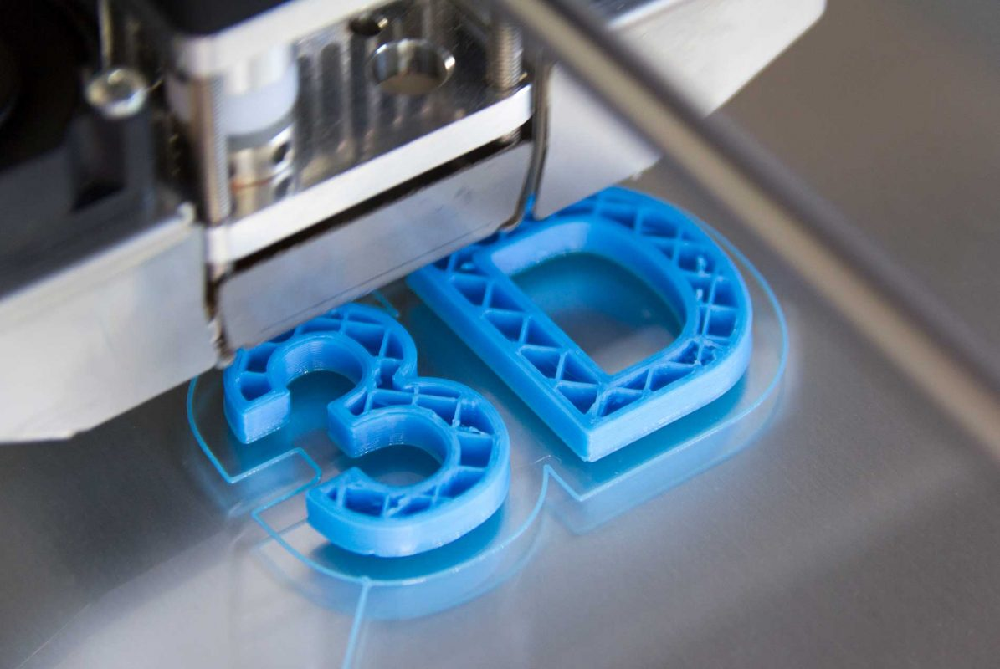
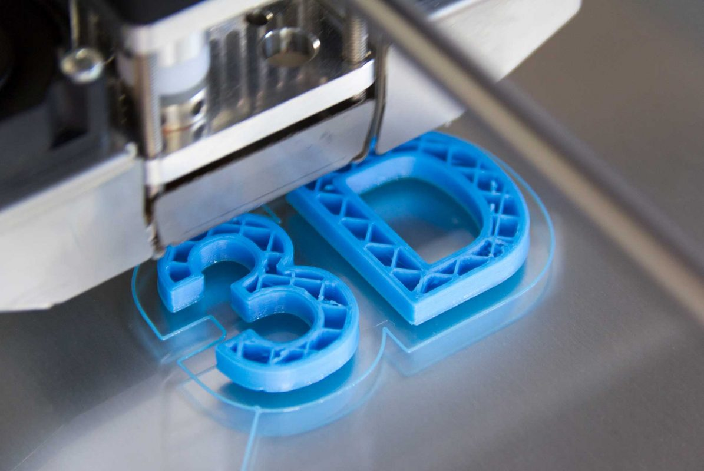

Comunidad de Estudio UTN
Comunidad de Investigación de la Universidad técnica nacional
La comunidad está formada por un grupo de estudiantes liderado por un profesor de la Universidad Técnica Nacional.
El profesor encargado, con su experiencia y conocimientos, guía y apoya a los estudiantes en sus investigaciones y proyectos,
brindando una oportunidad única para aprender y aplicar habilidades prácticas.
El objetivo principal de la comunidad es investigar proyectos que puedan ser implementados en la vida cotidiana, con un enfoque en soluciones ecológicas y sostenibles.
Un ejemplo de proyecto en el que están trabajando actualmente es el uso del ozono como desinfectante en una piñera local.
Este enfoque no solo ayudará a garantizar la seguridad alimentaria, sino que también promoverá la protección del medio ambiente.
La comunidad también tiene planes futuros para investigar otros aspectos de la piñera, incluyendo el uso de hongos de piñas para fines medicinales,
la extracción de filamentos de piñas para la producción de materiales ecológicos y la exploración del uso de la impresión 3D para crear objetos a partir de los filamentos de piña.
Con estos proyectos, la comunidad busca encontrar soluciones innovadoras que sean beneficiosas tanto para la sociedad como para el medio ambiente.
Proyectos de la comunidad
En el proyecto actual de la piñera, la comunidad está utilizando tecnología de ozono para crear un desinfectante ecológico que no solo protege la salud de los consumidores, sino que también respeta el medio ambiente.
El uso del ozono para desinfectar el agua y los equipos de la piñera es una alternativa más segura y efectiva que los productos químicos tradicionales,
lo que garantiza que la producción sea más sostenible y respetuosa con el medio ambiente.
En cuanto a los futuros proyectos, la comunidad está explorando la posibilidad de utilizar hongos de piñas para fines medicinales.
Los hongos tienen propiedades curativas únicas que pueden ser beneficiosas para la salud humana, y su uso también puede ser una forma sostenible de aprovechar los residuos de la piñera.
Otro proyecto interesante en el que la comunidad está trabajando es la extracción de filamentos de piñas para la producción de materiales ecológicos.
Los filamentos de piñas son un recurso natural que no se utiliza actualmente en gran medida,
pero que tiene un gran potencial como materia prima para la producción de materiales sostenibles.
La comunidad está explorando las posibilidades de crear objetos utilizando la impresión 3D y los filamentos de piña,
lo que podría ser una solución interesante para la producción de objetos ecológicos y sostenibles.
 
